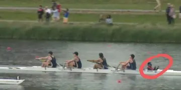
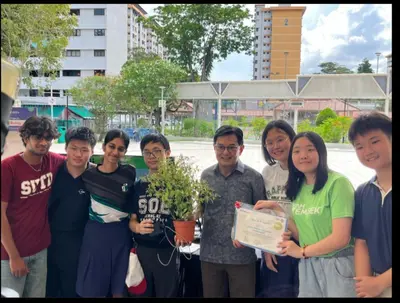
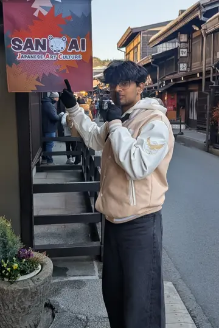
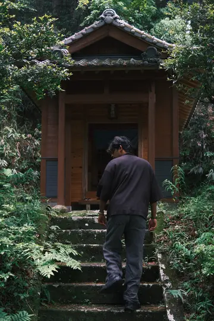
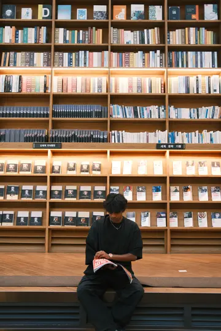
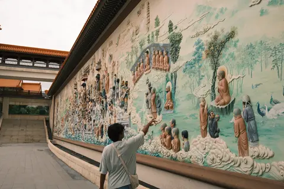
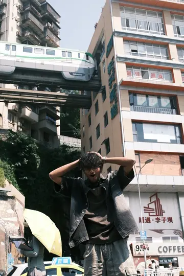
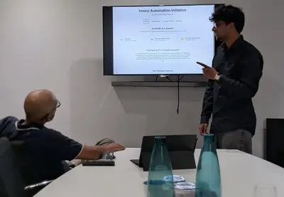

The route so far
Who I am
-
School · Whitgift, Croydon
Theatre and rowing
I played Lady Macbeth in the school's Macbeth. It was a boys' school, so someone had to. I was also in its first student-led play and got scouted by an acting agency at 15. On the water, I coxed an under-15 four that won a national B final.
School theatre 
The cox, circled -
Singapore · Sep 2024 to May 2025
A year at SUTD
I spent a year on exchange at SUTD in Singapore. I shot street photography on a Fujifilm and took 43 flights in 45 weeks, fitted around the degree.
I also mentored a student team for STEAMunity, who won Best Prototype and presented to the Deputy Prime Minister, and did research for ALITA, a legal innovation group in Asia-Pacific.

STEAMunity, Best Prototype -
Frames from the road

Jan 2025 
May 2025 
May 2025 
Jun 2025 
Jun 2025 -
Cardiff · Aug 2025 onwards
The AI programme at Innovi
Back in Cardiff for final year, I took on the AI programme at Innovi Advisors, a UK accountancy practice, part-time. I sat with the partners to find where staff time went, then turned 15 stalled draft agents into one agent the team now uses day to day. I run the staff training too.

Innovi Automation Initiative -
First client · Summer 2026
A national pharmacy group
This summer I got my first client of my own, a national UK pharmacy group with about £500m turnover, delivered through Innovi. I spent three days on site with Finance and HR, and three Copilot agents shipped. HR staff built two of them after an hour with me. Then I wrote the Executive Director a letter on what worked and who should own the next phase.
Delivered through InnoviAug 2026Three days on site
-
Graduation · July 2026
A First from Cardiff
I graduated with a First in Computer Science from Cardiff University. Alongside the degree I ran events for the university's AI safety society.
Cardiff UniversityFirstBSc Computer Science